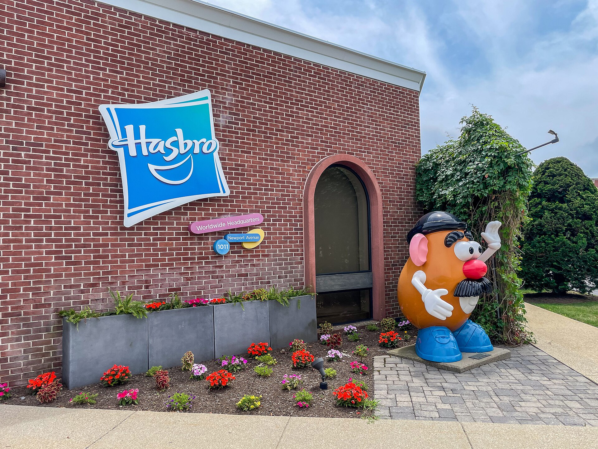
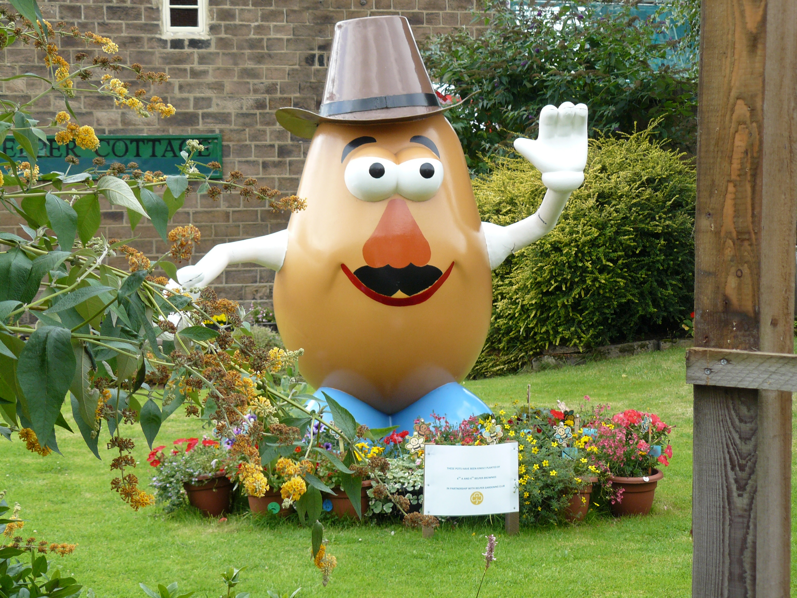
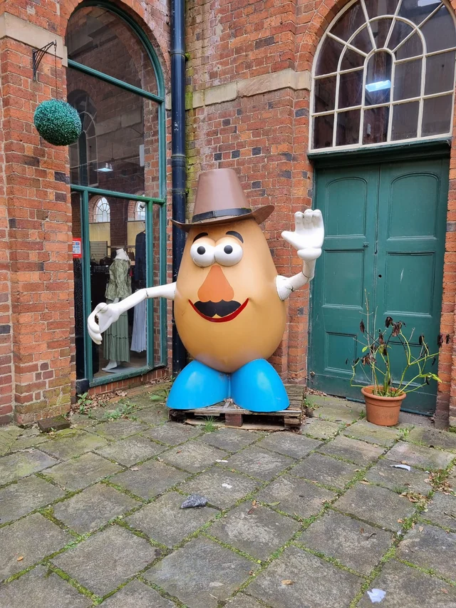

A Tale of Two Towns
How industrial espionage led to a giant potato

🇬🇧
Belper
Derbyshire, England
Home of Strutt's Mills
UNESCO World Heritage
⇄

🇺🇸
Pawtucket
Rhode Island, USA
Home of Hasbro
Birthplace of Mr Potato Head
In 2001, Belper's twin town of Pawtucket, Rhode Island — home to Hasbro, the creators of Mr Potato Head — gifted the town a two-metre statue of its most famous toy. Dressed as English settler William Blackstone in buckled shoes and a Quaker hat, he was a gloriously eccentric celebration of the bond between two towns connected by one very cheeky bloke from the 1700s.
Part industrial heritage. Part international friendship. Part giant potato. It suited Belper perfectly.

